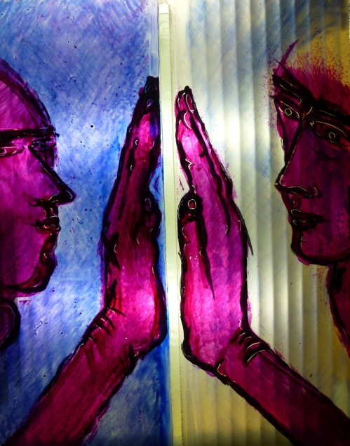

| events
work
glass and space
cv
texts
links
contact
Exhibition opening
Mark Angus - 80 Capriccios and the Turbulences of the Self
An Installation in Glass, Painting and Poetry
November 20, 2021 - January 30, 2022 in the Municipal Galerie "Leerer Beutel", Regensburg

>>
more images
>>
Press release